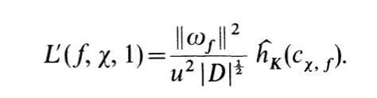

The following page contains the information for a running study group in Spring 2026 in Leiden on the paper Heegner points and derivatives of \(L\)-series I by Gross and Zagier.
The seminar is organised by Paolo Bordignon, Mateo Crabit and Felix Kalker.

Date |
Time |
Room |
Speaker | Topic |
|---|---|---|---|---|
| 10 February | 10:00 - 12:00 | BW.0.32 | Mateo | Introduction: Heegner points and the BSD conjecture |
| 17 February | 10:00 - 12:00 | BW.2.26 | Paolo | Modular curves |
| 24 February | 10:00 - 12:00 | BW.0.32 | Felix | Complex multiplication and Heegner points |
| 03 March | 10:00 - 12:00 | BW.0.07 | - | Heights on curves |
| 10 March | 10:00 - 12:00 | BW.0.07 | - | Non-archimedean local height pairing I |
| 17 March | 10:00 - 12:00 | BW.0.07 | - | Non-archimedean local height pairing II |
| 24 March | 10:00 - 12:00 | BW.0.32 | - | Archimedean local height pairing |
| 31 March | 10:00 - 12:00 | BW.0.32 | - | Derivatives of Rankin L-series |
| 07 April | 10:00 - 12:00 | BW.0.32 | - | Wrapping up the proof |
| 14 April | 10:00 - 12:00 | BW.0.32 | - | Further directions |